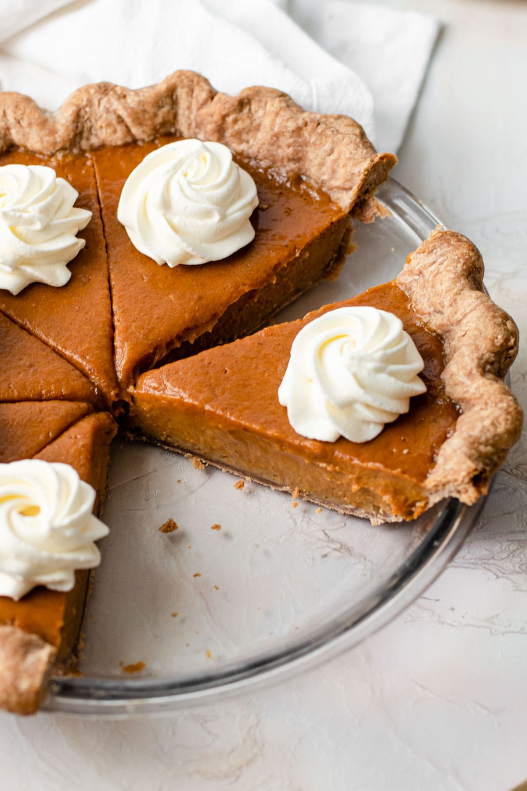

Pumpkin Pie

If you are looking for perfect fall recipe, thats the one:
When the leaves start to fall, the rain is tapping rytmicly on your window, it is time for this special pumpkin pie! Go to your local market, secure one big pumpkin and make yourself this yummy treat!
Ingredients:
- 1 (15 ounce) can pumpkin puree
- 1 (14 ounce) can Eagle Brand Sweetened Condensed Milk
- 2 large eggs
- 1 teaspoon ground cinnamon
- ½ teaspoon ground ginger
- ½ teaspoon ground nutmeg
- ½ teaspoon salt
- 1 (9 inch) unbaked pie crust
Steps:
- Gather all ingredients.
- Preheat the oven to 425 degrees F (220 degrees C).
- Whisk pumpkin puree, condensed milk, eggs, cinnamon, ginger, nutmeg, and salt together in a medium bowl until smooth.
- Pour into crust.
- Bake in the preheated oven for 15 minutes.
- Reduce oven temperature to 350 degrees F (175 degrees C) and continue baking until a knife inserted 1 inch from the crust comes out clean, 35 to 40 minutes.
- Let cool before serving.
Your perfect pumpkin pie is ready! Enjoy!
(Remember.. Grandma Robert is watching you..)